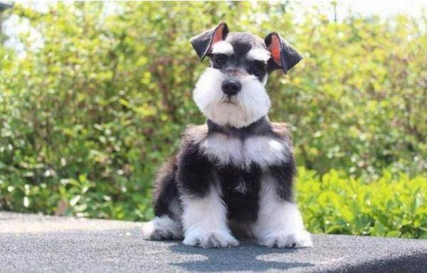

雪納瑞
雪納瑞原先是以品犬(Pi-nschnauzer)而著名，雪納瑞這個名字(Schnauzer發音為Shnowtser德國音的z聽起來總像ts)是來自於德國schnauze(意思是豬嘴形)，
這樣稱牠是因為在口吻部上具有濃密的腮鬍。
迷你雪納瑞 Miniature Schnauzer
原產地：德國
身高：30 ~ 36公分
體重：6 ~ 8公斤
毛色：黑白色、深胡椒色、淺胡椒色、黑銀色
毛質：屬於雙層毛，內層毛細軟，外層毛剛硬，腿部和頭部的毛很長，背部的毛則短
個性：開朗活潑，喜歡與人接近，個性勇敢堅強，雖然友善但警覺性高，對於領土的保衛性非常強悍

連到第2頁
連到第3頁
連到第4頁